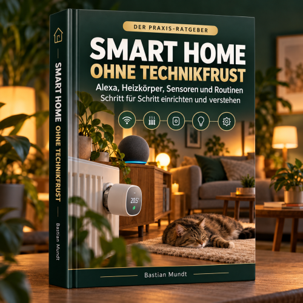

Balkon & Garten5,90 €
Beetplan „Das Nachwachsende Beet“
Digitaler Beetplan mit Anbau- und Pflegewissen für Gemüse, Blumen und Kräuter – eine strukturierte Idee für Garten und kleine Anbauflächen.
Empfehlung ansehenAusgewählte digitale Ratgeber und Ideen passend zu kleinen Wohnungen, Küche, Balkon und Smart Home.
Digitaler Beetplan mit Anbau- und Pflegewissen für Gemüse, Blumen und Kräuter – eine strukturierte Idee für Garten und kleine Anbauflächen.
Empfehlung ansehen
Digitaler Ratgeber zu einem naturbewussten Umgang mit Schädlingen an Garten-, Zimmer- und Haushaltspflanzen.
Empfehlung ansehenPraktischer digitaler Ratgeber mit Rezepten, Wochenplan und Budgetideen für eine günstige und alltagstaugliche Küche.
Empfehlung ansehen
Digitaler Praxisratgeber für Smart-Home-Einsteiger mit Ideen zu Alexa, Sensoren, Heizkörperthermostaten, Beleuchtung und Routinen – passend zum Nachrüsten in Mietwohnungen.
Empfehlung ansehenAnzeige · Affiliate-Link: Wenn du über einen Link kaufst, erhalten wir möglicherweise eine Provision. Der Preis bleibt unverändert.